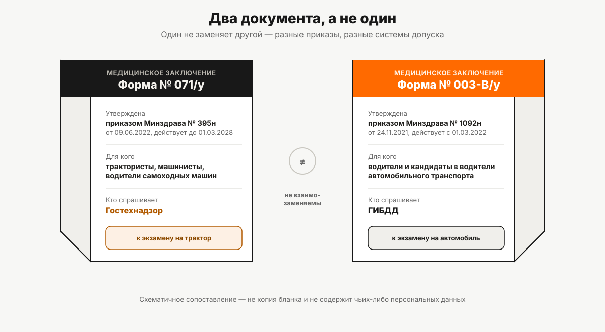

Медицинское заключение по форме 071/у
Для самоходных машин действует своя форма медицинского заключения, утверждённая отдельным приказом Минздрава. Чем она отличается от водительской справки и на каком этапе её спрашивают.
Пришли с водительской медсправкой — а в гостехнадзоре её не приняли. Не ошибка приёмщика: для самоходных машин действует отдельный документ, утверждённый отдельным приказом, и водительская справка на трактор, комбайн или снегоход попросту не рассчитана.
Что требует норма
Правила допуска к управлению самоходными машинами (постановление Правительства РФ от 12.07.1999 № 796) в подпункте «б» пункта 11 говорят прямо: к экзамену допускаются лица, «прошедшие медицинское освидетельствование и имеющие действующее медицинское заключение о наличии (об отсутствии) у трактористов, машинистов и водителей самоходных машин ... медицинских противопоказаний, медицинских показаний или медицинских ограничений к управлению самоходными машинами». Это медицинское заключение — самостоятельный документ из пункта 15 того же постановления, обязательный к предъявлению при подаче документов на экзамен; полный список документов для подачи собран в статье «Документы для получения прав тракториста».
Форма 071/у: чем утверждена и до какой даты действует
Форма этого медицинского заключения — форма № 071/у, утверждённая приказом Минздрава России от 09.06.2022 № 395н. Приказ вступил в силу 3 июля 2022 года и, согласно его собственному указанию срока действия, действует до 1 марта 2028 года. Это отдельный акт именно для трактористов, машинистов и водителей самоходных машин (включая кандидатов) — не общий медицинский бланк, а форма, разработанная под конкретную норму пункта 11 «б» Правил допуска.
Форма 003-В/у: для кого она
Форма № 003-В/у — это другой документ, утверждённый другим приказом: приказом Минздрава России от 24.11.2021 № 1092н «Об утверждении порядка проведения обязательного медицинского освидетельствования водителей транспортных средств...». Он действует с 1 марта 2022 года и покрывает медицинское освидетельствование водителей и кандидатов в водители автомобильного транспорта — то есть систему допуска, за которую отвечает ГИБДД, а не гостехнадзор. Различие между этими двумя системами допуска разобрано целиком в статье «Чем права тракториста отличаются от водительских».
Два документа рядом
| Форма 071/у | Форма 003-В/у | |
|---|---|---|
| Чем утверждена | Приказ Минздрава от 09.06.2022 № 395н | Приказ Минздрава от 24.11.2021 № 1092н |
| Для кого | Кандидаты и действующие трактористы, машинисты, водители самоходных машин | Кандидаты и действующие водители транспортных средств |
| Кто спрашивает | Орган гостехнадзора | Подразделения, работающие по системе допуска ГИБДД |
| Действует (редакция приказа) | до 01.03.2028 | с 01.03.2022 |
Формулировки и структура граф у двух документов разные — это следует уже из того, что их утверждают разные приказы под разные системы допуска. Один документ не заменяет другой: справка 003-В/у не подойдёт для подачи в гостехнадзор, и наоборот.

Противопоказания, показания, ограничения — три разных понятия
Само название документа уже задаёт структуру: заключение о наличии (или отсутствии) медицинских противопоказаний, медицинских показаний или медицинских ограничений к управлению самоходными машинами. Это три разных вывода, а не синонимы:
- противопоказание — по смыслу нормы это основание, при котором управление конкретной техникой в принципе не допускается;
- показание — условие, при котором управление возможно, но врач фиксирует его как медицинское основание (например, для конкретного вида техники или режима);
- ограничение — условие, при котором управление разрешено, но с оговоркой (классический пример из другого пункта Правил допуска — управление в очках: пункт 5 постановления называет такую отметку «ограничительной» применительно к записям в удостоверении).
Дальше этой структуры источники проекта не позволяют пойти: конкретный перечень диагнозов и состояний, которые относятся к каждой из трёх категорий именно для самоходных машин, в имеющихся материалах не подтверждён и в статье не приводится — см. отдельно ниже, в разделе «Чего в норме нет».
На каком этапе заключение спрашивают
Медицинское заключение — один из документов, которые заявитель представляет в орган гостехнадзора при подаче на экзамен (пункт 15 Правил допуска), и одновременно — самостоятельное условие допуска к экзамену (пункт 11 «б»). То есть без действующего заключения кандидата к экзаменам просто не допустят: это происходит до теории и практики, а не в процессе экзамена.
Что делать, если в заключении есть ограничения
Правила допуска отдельно предусматривают в удостоверении графу «Особые отметки», куда вносятся в том числе ограничительные записи — например, уже упомянутая отметка об управлении в очках (пункт 5). Из этого можно сделать осторожный вывод: медицинское ограничение не обязательно означает отказ в допуске, оно может превратиться в отдельную пометку в документе. Но прямой нормы, которая описывала бы именно процедуру «из медицинского заключения с ограничением — в отметку удостоверения» шаг за шагом, в тексте Правил допуска нет. Это связь, которую логично предположить по совокупности двух пунктов, а не прямая цитата отдельного правила, и её стоит воспринимать с этой оговоркой.
Отдельный случай: возврат после лишения
Есть ещё один сценарий, где медицинское заключение фигурирует отдельно, — возврат удостоверения после лишения права управления за определённые административные правонарушения. Это самостоятельная процедура со своими условиями, не совпадающая с обычным получением медицинского заключения перед первым экзаменом, и в границы этой статьи не входит.
Чего в норме нет
Две вещи, о которых часто спрашивают и которых в использованных источниках нет:
- срок действия самого медицинского заключения. Пункт 11 «б» Правил допуска требует «действующее» заключение, но не называет конкретный срок в годах или месяцах — сколько именно оно действительно, норма не уточняет;
- стоимость медицинского освидетельствования. Ни размер, ни диапазон в источниках проекта не подтверждены, и в статье не называется ни в каком виде.
Оба пункта — не пробел этой статьи, а честная граница того, что подтверждено источниками на дату написания.